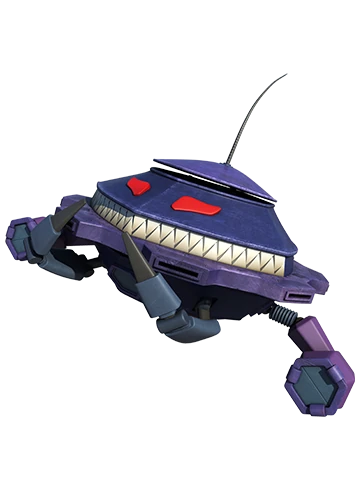

BoBoiBoy
Hero Bumi!
BoBoiBoy
Hero Bumi!
 Ochobot
Robot Pembantu AI
⚡
Ochobot
Robot Pembantu AI
⚡

AKADEMI KEBENARAN MBK
Sila Pilih Kumpulan Pembelajaran Murid:
🎒
🏫
🍪
PILIH TAHUN PENGAJIAN
Sila pilih kelas untuk memulakan cabaran:
PERLAWANAN ADJEKTIF
Kategori: Slow Learner - Tahun X
Pemain 1
BoBoiBoy
Pemain 2
Adu Du
⚡ CIRI PINTAR CIKGU ⚡
Bina Soalan Kuiz Baru Menggunakan AI Ochobot!
Jana kuiz bertema secara automatik (10 soalan).
🔮 Ochobot sedang menyusun soalan baru... Sila tunggu...
✅ Kuiz berjaya dijana! Klik mula bermain di bawah.
Tahun X
Soalan 1 / 20
🤠 PAPA ZOLA SOAL:
BoBoiBoy mempunyai pedang yang sangat ________.
🧩 PADANAN VISUAL KARTUN
Tahun 1 | Cabaran 1/20
Kategori: Warna
⚡
Cari warna yang sama!
Selesaikan semua cabaran hero!
✨ KAD IMBASAN GAMBAR PINTAR AI ✨
Sila pilih kata adjektif atau taip sendiri kosa kata baharu:
🔮 Ochobot sedang menjana maksud & melukis gambar ilustrasi menggunakan Imagen 4.0... Sila tunggu sebentar...
KOSA KATA AI
Pantas
Maksud Mudah Ochobot:
Ayat Contoh BoBoiBoy:
Fakta Adjektif:
🔮 Ochobot sedang berfikir...
🤖 AI OCHOBOT
❌ Sistem sibuk! Teruskan perjalanan.
🎉
🎊
KEPUTUSAN PERTANDINGAN!
BoBoiBoy
100
Adu Du
80
👨🏫 KHUSUS UNTUK GURU 👩🏫
Jana Laporan Prestasi AI
Dapatkan analisis ringkas dan cadangan aktiviti susulan berdasarkan markah murid ini.
🔮 Sedang menjana ulasan pedagogi...
Adu Du
Seteru Utama

Probe Robot Tempur